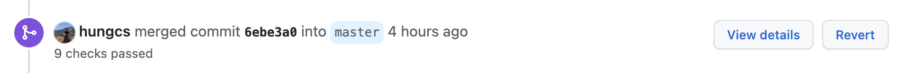

Release Process
Standard release process¶
1. Determine the version name¶
Note
Version names always begin with v.
Examples of version names:
"vX.Y" # Release major version X (starts at 0), minor version Y (starts at 1).
"vX.Y.Z" # Release major version X (starts at 0), minor version Y (starts at 1), patch Z (starts at 1).
"vX.YrcZ" # Release candidate Z, without a period. (starts at 1)
"vX.Y.dev" # Developer version, with a period.
Inspiration:
2. Update Ludwig versions in code¶
Create a new branch off of a target_release_branch, e.g. main or release-X.Y.
git checkout <TARGET_RELEASE_BRANCH>
git checkout -b ludwig_release
git push --set-upstream origin ludwig_release
Update the versions referenced in globals and setup. Reference PR.
git commit -m "Update ludwig version to vX.YrcZ."
git push
Create a PR with the change requesting a merge from ludwig_release to the target branch.
Get approval from a Ludwig maintainer.
Merge PR (with squashing).
3. Tag the latest commit, and push the tag¶
After merging the PR from step 2, the latest commit on the target_release_branch should be the PR that upgrades ludwig versions in code.
Pull the change from head.
git checkout <TARGET_RELEASE_BRANCH>
git pull
Add a tag to the commit locally:
git tag -a vX.YrcZ -m "Ludwig vX.YrcZ"
Push tags to the repo.
git push --follow-tags
4. In Github, go to releases and "Draft a new release"¶
Loom walk-through.
Release candidates don't need release notes. Full releases should have detailed release notes. All releases should include a full list of changes (Github supports generating this automatically).
Do not upload assets manually. These will be created automatically by Github.
For release candidates, check "pre-release".
5. Click publish¶
When the release notes are ready, click Publish release on Github. Ludwig's
CI will automatically update PyPI.
6. Update Ludwig docs¶
Check that the Ludwig PyPi has been updated with the newest version.
Go to the ludwig-docs repo and update the auto-generated docs there.
> cd ludwig-docs
> git pull
> git checkout -b update_docs
> pip install ludwig --upgrade
> python code_doc_autogen.py
If there are any changes, commit them.
> git commit -m "Update auto-generated docs."
> git push --set-upstream origin update_docs
Create a PR.
7. For major releases, create a release-X.Y branch¶
> git checkout main
> git checkout -b release-X.Y
> git push --set-upstream origin release-X.Y
All subsequent minor releases on top of this major version will be based from this branch.
8. Spread the word¶
Announce the release on Slack.
Ludwig X.Y.Z Released
Features: Improvements to <CONTENT>. See <LINK>release notes<LINK> for complete details.
Docs: https://ludwig.ai/latest/
If it's a major version release, consider other forms of publicization like coordinating sharing the release on other social media, or writing a blog post.
Cherrypicking bugfix commits from main to stable release branches¶
1. Gather a list of commit hashes that should be cherrypicked¶
You can use either the full hashes from git log or partial hashes from the
Github PR UI, i.e.

2. Cherry pick each commit in a cherrypick-X.Y branch¶
git checkout release-X.Y
git checkout -b cherrypick-X.Y
git cherry-pick <commit_1> # One commit at a time.
git cherry-pick <commit_2> <commit_3> <commit_4> ... # Or multiple commits all at once.
Ensure that all cherry-picks have been correctly applied.
Note
Empty cherry-picks could mean that that commit already exists.
3. Create a PR with the cherry-pick changes, merging into release-X.Y¶
Push the cherrypick branch.
git push --set-upstream origin cherrypick-X.Y
Create a PR with the change requesting a merge from cherrypick-X.Y to release-X.Y.
Get approval from a Ludwig maintainer.
Merge PR without squashing.
Continue with the standard release process.
Appendix¶
Oops, more PRs were merged after the version bump¶
If there were some last minute PRs merged after the version bump, reorder the commits to make the version bump be the last commit that gets tagged before the release.
Oops, I tagged the wrong commit, and pushed it to github already¶
git tag -d <tagname> # delete the old tag locally
git push origin :refs/tags/<tagname> # delete the old tag remotely
git tag <tagname> <commitId> # make a new tag locally
git push origin <tagname> # push the new local tag to the remote